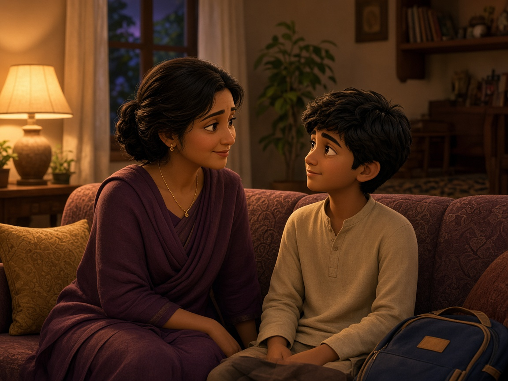
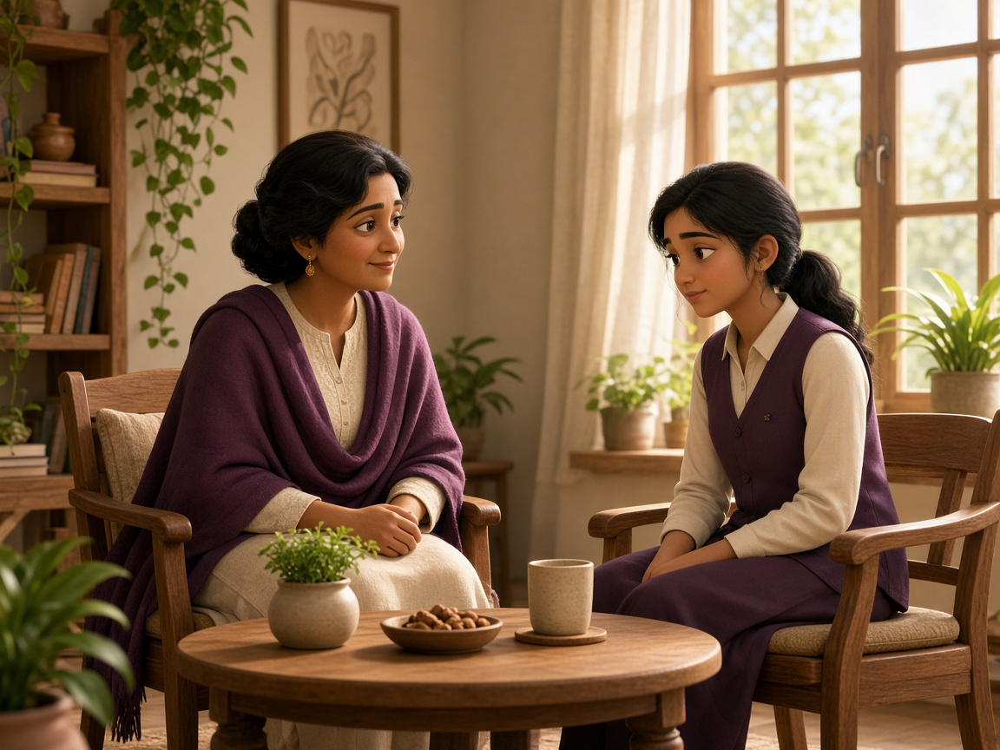

Teachers
They notice the symptoms
Behavior shifts, slouching, lack of focus. Teachers are often first. They cannot diagnose the cause.
For school leadership
The Health Side of Academic Performance
Physiological and psychological wellbeing shape attention, learning endurance, and academic performance. Second Bell helps a school see that side of the day, and act while there is still time.
Under the score
Focus can slip, a posture can fold, and stress can be read as behavior, while the academic result still looks ordinary. Those are health signals. They sit underneath performance.
Three views
Home often hears later. Health can assess what neither side can name alone.
Teachers
Behavior shifts, slouching, lack of focus. Teachers are often first. They cannot diagnose the cause.

Parents
Parents often learn through academic reports, after an issue has been developing for months.

Health professionals
They can interpret what the classroom cannot name. Second Bell brings that reading into school. Leadership keeps the decisions.
The gap
Classroom
A behavior shift, a slouch, a loss of focus. Noticed, and left without a cause.
Home
A report arrives later. By then the pattern has had months to settle.
Health
A clinical reading that could explain the day, if it ever meets the school.
Second Bell
The classroom, the home, and a clinical reading, held as one picture. The school keeps control of the day.
Everyday signals
A teacher can notice these signals. They are not a diagnosis. The clinical names live on the framework page.
Attention & Readiness
Focus slips when fatigue or cognitive overload is already in the way.
Emotional Regulation
Stress and peer friction that a student cannot yet settle.
Student Fatigue
Chronic tiredness that affects participation, memory, and activity.
Digital Habits
Screens, sleep, and a day that has become too sedentary.
Posture & Physicality
Ergonomics, pain, and the stamina a long school day asks for.
Student Wellbeing
Safety, mental health, and physiological balance, held as one picture.
Framework
These domains are related to the school-day signals. The names are not the same, and a difficulty in one place often travels into another.

Program
Preventive work sits inside the week the school already runs. The timetable stays. Leadership keeps the decisions.
On campus and non-invasive, before a small issue becomes an academic one. EPHR mapping, postural and biomechanical checks, vision and basic hearing.
For students, teachers, and parents. Ergonomics, nutrition for brain development, and navigating puberty.
How to tell a distracted student from a fatigued one. Learning differences, speech and motor delays, and behavioral health first aid.
When screening finds something the classroom cannot hold. Pediatric specialists, child psychologists, speech and occupational therapists.
School leadership sets the fit. Teachers learn what they are already seeing. Students, teachers, and parents join the workshops. Specialists enter only when a need is clear.
No disruption to academics. Minimal administrative burden. Schools retain full control.
Interventions
These supports are specific. They follow a risk the screening has already highlighted.
Speech & Language
Articulation, stuttering, and language delays that get in the way of class participation.
Occupational Therapy
Fine motor skill, handwriting, sensory processing, and executive functioning.
Behavioral Health
Anxiety, ADHD symptoms, emotional dysregulation, and severe exam stress.
RH SPRINT
Sports health. Biomechanical screening, before an injury takes a student out of play.
Digital Balance
Screen time, digital fatigue, and the sleep that learning depends on.
Teacher Training
Learning differences, and how a classroom can adapt after screening.
85
RSHS
85 is the overview mark. It is not a measured result from a named school. The score page shows how a campus result is read, and what leadership receives.
Outcomes

01
Attention and sustained learning through the day.
Physiological or psychological barriers identified earlier.
Fewer behavioral disruptions, through support for emotional regulation.
Wellbeing data and campus trends for leadership.
Enroll your school
Enrollment is a leadership decision. It begins with culture fit: no disruption to academics, minimal administrative burden, and the school keeps control. Alignment comes first, then screening, then integration with the week you already run.